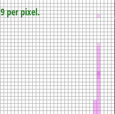

What we have built here is a simple rasterizer. It can rasterize points, lines, and triangles, and can be used to rasterize many different kinds of 2D graphics. It is able to rasterize triangles with solid colors, interpolated vertex colors (through barycentric coordinates), and even textures. It also is able to sample pixels and different rates (supersampling), utilize different sampling methods (nearest-pixel and bilinear), and take advantage of different mipmap levels to aid with memory and speed. I think this project was an excellent example of the power of abstraction. Every function built off each other (e.g. fill_pixel → rasterize_triangle → rasterize_interpolated_color_triangle → rasterize_textured_triangle → etc.) It was cool to be able to trust your building blocks that you had created so far to make more and more powerful things. By the end, we're still shocked how much customization our final rasterizer has.
clockwise + counter clockwise (fixed with counter if statement), occasional out of bounds pixels colored in (fixed by removing rasterize_line lines of code), occasional blank spaces right before bounds (changed for statements to start with floats at 0.5 instead of accounting for that right at the end in rasterize_point)
We rasterize a triangle by sampling points at fixed distances that lay inside the bounds of a triangle. In our case, with a sample rate of 1, that would mean valid points would each be 1 x and y y unit apart. You can ensure all of the sample points are in bounds of the triangle by running 3 line tests.
Our algorithm is no worse than one that checks each sample within the bounding box of the triangle because that is exactly what it does. Based on the edges of the triangle, we look at the points within a minimum area square around the triangle, and only sample the points that are in the bounds of the triangle, as per the 3 line tests.

The primary issue that held us up in this section was that whenever we increased the sample rate, the lighter pixels would push up and to the left instead of just replacing the original dark pixels in line. This was even more obvious when looking at the thinner triangles, as we could see that there were sqrt(x) number of copies of each triangle shifting up and to the left for a sample rate of x. We realized this was being caused by how we were incrementing our for loops for supersampling subpixels. We were incrementing x and y by sqrt(sample_rate) instead of by 1/sqrt(sample_rate) each time, causing us to sample pixels out of our intended area.
We have created a system for supersampling successfully given sample rates of 1, 4, 9, 16, and 25. Pixels are divided into the sample rate number of subpixels, which are then individually sampled for triangles. Lines and points filled in subpixels in a way to show now antialiasing effect despite fitting in the framework of subpixels. Subpixels are loaded into a 1D sample buffer in row-major order for subpixels grouped by pixels also sorted in row-major order. Color values calculated for each pixel group of subpixels are then stored in the final RGB framebuffer for rendering.
Below, we can see the tip of the pink triangle from basic test 4 under sample rates 1, 4, 9, and 16.
This section was relatively straightforward, mainly just filling in the transformation matrices from the slides. We did run into one problem in rotate, where our robot’s head was not rotating as much as we had intended. We soon realized it was because the function took in degrees but needed radians for the transformation matrix, so a line to convert the input into radians solved our problem.
We can now transform Vector2Ds through translation, scaling, and rotation using the matrices we have implemented.
Here, our robot has unfortunately passed away from asphyxiation. As a result, our robot’s color has turned to a dark blue, and his limbs have all shrunk, as we are well into the decomposition process.
This part was also very straightforward. We knew we had to implement the barycentric coordinate equations from the slides to get our interpolated color at each sample point. The most difficult part was understanding the “Color” struct, but once we had wrapped our heads around the arithmetic built into the struct, it was smooth sailing from there.
The idea of barycentric coordinates is very closely related to the concept of “change of basis” that we have learned in the EECS16A/B series. Say you have a point in triangle ABC at location (x, y), and we want to get the related point location for that some location in triangle VaVbVc. Barycentric coordinates allow us to transform (x,y) in the ABC domain into (u,v) in the VaVbVc domain.
One big problem we ran into was while we were implementing sample_nearest. The function seemed straightforward enough to code, but when we ran tests we were getting blank screens. We soon realized that uv[0] and uv[1] were both values in the range [0,1], while the texture is much larger than that. Multiplying uv[0] by mip.width and uv[1] by mip.height fixed our problem. Additionally, we had to spend a lot of time on edge cases, especially within the sample_bilinear function. The two main sets of edge cases we wrote code for were if the sample point was on any of the 4 corners of the bounds (e.g. 0,0) or if a point was on an edge (e.g. x is 0 and y is nonzero).
When you’re rasterizing textured shapes, you can go about sampling texture values in a couple ways. First, if you sample pixels using nearest-pixel sampling, you simply pick the texture sample closest to the point you’re trying to sample and add its color value to the sample buffer. Instead, if you sample pixels using bilinear sampling, you look at the 4 nearest samples, calculate each of their relative distances from the location you’re trying to sample, then run 2D linear interpolation on those 4 points, using their relative distances as weights. Add the output color of that calculation to the sample buffer.
Top Left: nearest pixel, sample rate 1, Top Right: nearest pixel, sample rate 16, Bottom Left: bilinear, sample rate 1, Bottom Right: bilinear, sample rate 16
Relative differences: For the orange part of the texture for nearest pixel, there is a lot of randomness with the shades of each pixel, while bilinear is a lot more smoother and constant in color. Additionally, the bilinear sampled picture both look a bit more “blurry” than their nearest sample counterparts.
Filling out the sample function took the most of our time here. We had to account for 6 cases, where psm could equal 0 or 1, and lsm could equal 0,1, or 2. Cases lsm = 0, psm = 0 and lsm = 0, psm = 1 were easy because we had already implemented them in Task 5. Cases lsm = 1, psm = 0 and lsm = 1, psm = 1 were similarly simple, as all we had to do was make a slight change to our level input. Cases lsm = 2, psm = 0 and lsm = 2, psm = 1 were most difficult, because we had to implement a lerp() function for each. For the former case, we had to calculate the continuous and rounded mipmap level for the sample, and based on which was bigger, determined our x value for lerp(x, sample_nearest(sp.p_uv, D1), sample_nearest(sp.p_uv, D2)). For the latter case, we applied the trilinear filtering outlined in the slides and again had to calculate two mipmap levels; this time a continuous and a floored level. We ended up returning lerp(D - floorD, sample_bilinear(sp.p_it uv, floorD), sample_bilinear(sp.p_uv, floorD + 1)).
With the completion of this project we are now able to use both nearest pixel and bilinear pixel sampling with level sampling configurations where we can use the zeroth mipmap level, nearest mipmap level, or linearly sampled mipmap level; thus, trilinear sampling is now one of the possible sampling methods we are able to utilize. A complete pipeline from svg files to triangle rasterization to sampling is now complete, allowing us to fully utilize the potential of our rasterizer.
Increasing the sampling rate improves antialiasing, but also requires more memory usage and lowers the speed.
Top Left: L_ZERO and P_NEAREST, Top Right: L_ZERO and P_LINEAR, Bottom Left: L_NEAREST and P_NEAREST, Bottom Right: L_NEAREST and P_LINEAR